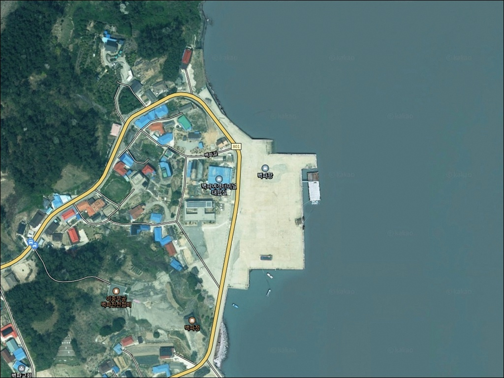
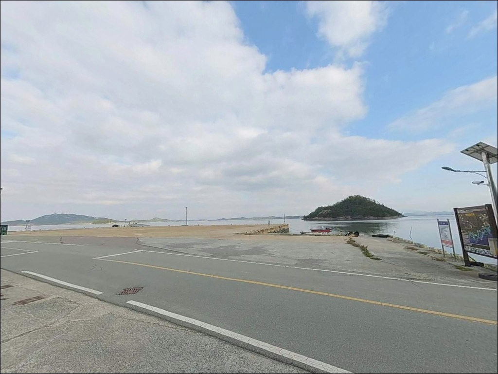
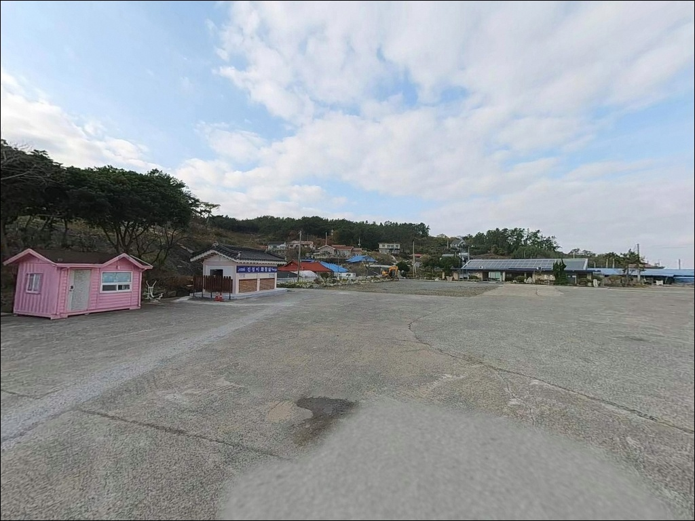
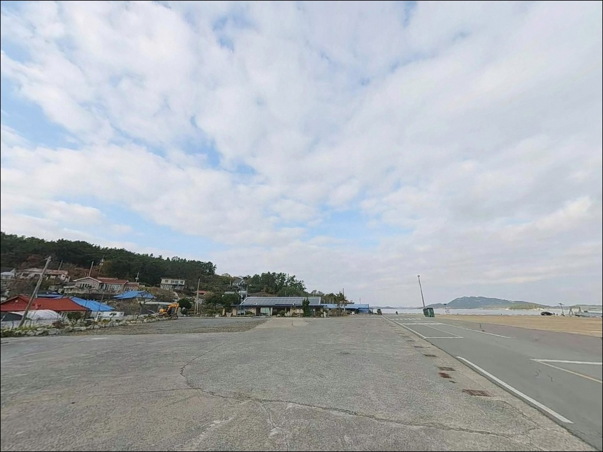
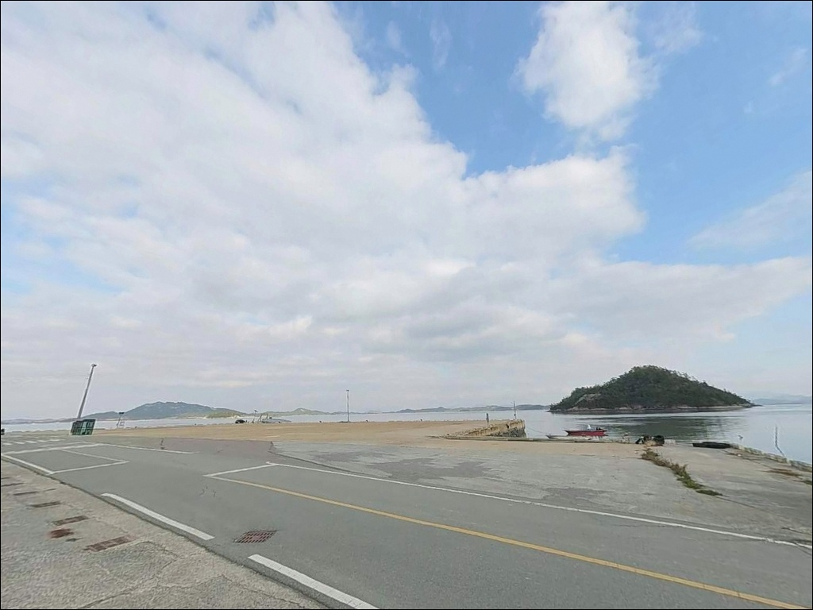
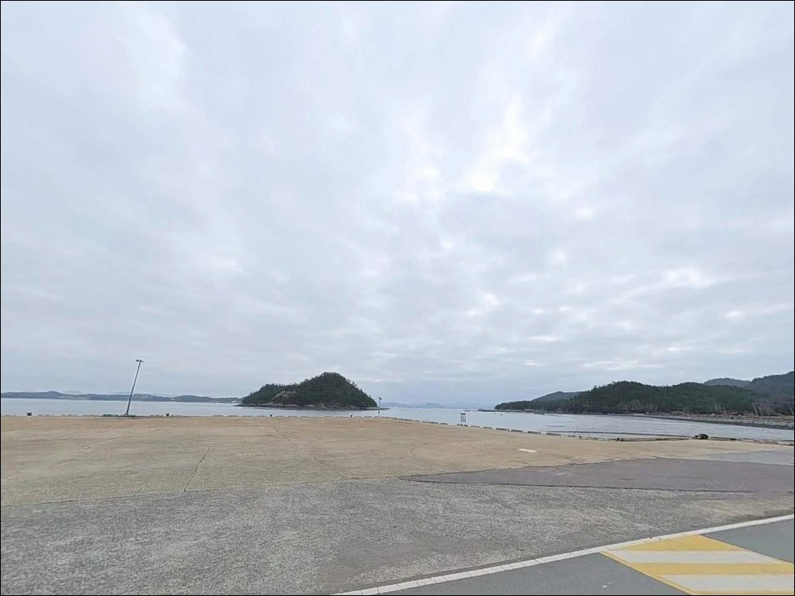
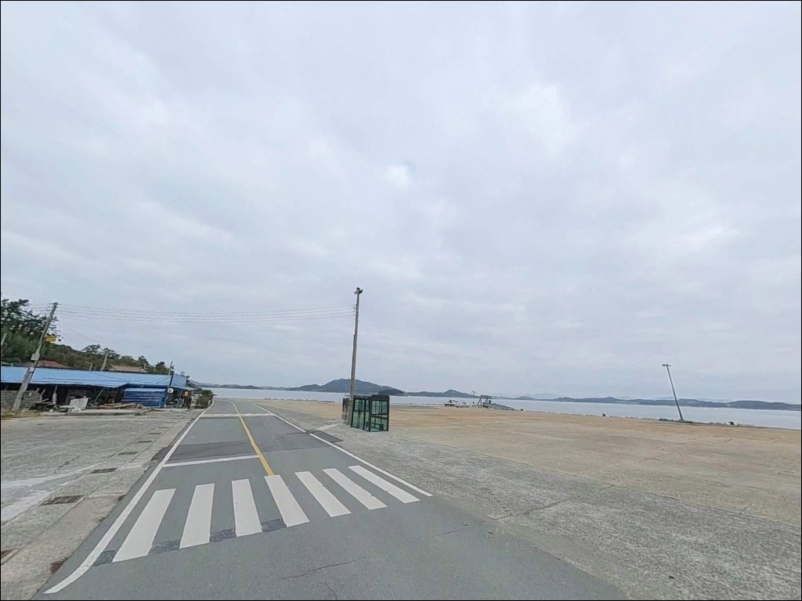
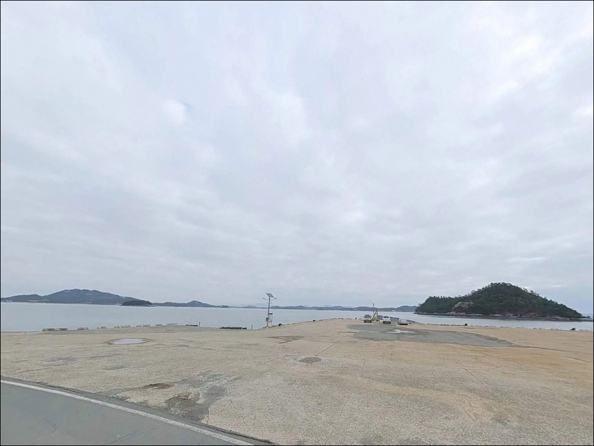
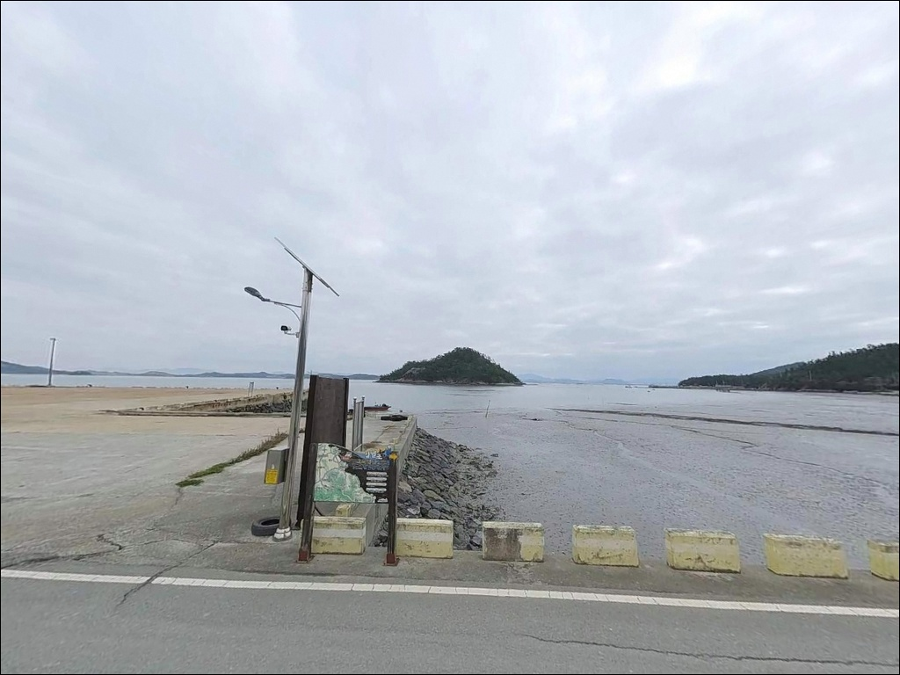

벽파항, 진도 전남 진도군 한적한 분위기 속 차박, 낚시를 함께 하기 좋은 곳
이 페이지에는 광고(제휴 링크 포함)가 있으며, 광고 링크를 통해 구매하면 운영자가 판매 수익 또는 수수료를 받을 수 있습니다. 포인트 사진: 카카오맵 스카이뷰·로드뷰. 이 페이지의 지도·사진 이미지는 카카오맵의 실제 서비스 이미지와 다를 수 있습니다.


포인트 안내
벽파항
전남 진도군 고군면 벽파리 740-5
물때 확인 없이 울돌목 인근 포인트로 진입하면
강한 조류 때문에 어떤 채비도 제자리를 잡지 못합니다.
벽파항은 명량해협 서측에 위치한 소규모 물양장 구조로,
물돌이 전후 조류 변화가 매우 크고
사리 전후에는 채비가 바닥으로 내려가지 않는
상황이 만들어지는 포인트입니다.
전남 진도군 고군면 벽파리,
울돌목 서측 수역과 맞닿은 이곳은
앞바다에 감보도가 위치한 반폐쇄형 내만 지형입니다.
소규모 물양장 약 200m 구조의 어항으로,
이충무공 벽파진 전첩비와 벽파정이
항구 바로 옆에 자리한 역사적 배경을 가진 포인트입니다.
이 글은 벽파항의 지형 조건, 물때 판단 기준,
낚시 스타일별 공략 조건, 차박 여건에 집중합니다.
특정 어종의 조황 단정이나
시설 운영 보장은 이 글의 범위에 포함되지 않습니다.

1. 진입 동선과 포인트 접근성
진도 해안일주도로를 따라 고군면 방향으로 진입하면
벽파항까지 포장 왕복 2차선 도로로 접근이 가능합니다.
일반 승용차나 중형 SUV는 항구 앞까지
진입에 큰 어려움이 없는 도로 환경이며,
항 내부 배후 공터와 선착장 주변에
차량을 세울 수 있는 공간이 갖춰져 있습니다.
중형 차량까지는 항내에서 회차가 가능하며,
대형 캠핑카나 견인형 차량은
진입 전 도로 폭과 항내 배후 공터 크기를
미리 확인한 뒤 진입하는 편이 안전합니다.
벽파정과 이충무공 전첩비 인근에 주차·광장 공간이 있어
승용차 기준 단기 주차에는 비교적 여유가 있는 편입니다.
주차 자리를 잡을 때는
어선 이동 동선과 어구 접촉 여부를 먼저 살피는 것이
기본 매너입니다.
낮 시간대에는 역사 탐방객이 간헐적으로 오가므로
이른 아침이나 이른 저녁 진입이
주차 자리를 확보하기에 유리한 타이밍입니다.

2. 차박 환경과 야간 체류 여건
벽파리는 소규모 어촌 마을 구조로,
야간 시간대에는 차량 통행이 드물고
전반적으로 한적한 분위기입니다.
여객선 기능이 쇠퇴한 항구 특성상
심야에는 인적이 드물고 소음이 적은 편이며,
조용한 1박 단기 체류에 어울리는 구조입니다.
다만 마을과 항구가 매우 인접한 구조이므로
취사음, 음향기기, 야간 소음은 최소화하는 것이
이웃 배려 차원에서 기본입니다.
차박이란 차량을 숙박 공간으로 활용하며
현장에서 하룻밤 머무는 여행 방식입니다.
벽파항은 역사 유적과 항구가 한 공간에 있는 특성상
장기 야영보다는 낚시 후 단기 체류 형태가 맞습니다.
벽파정, 전첩비, 삼별초 호국공원 인근 구역에서의
야영·취사는 현장 안내문을 먼저 확인한 후 결정하십시오.
서해 특성상 북동풍·북서풍이 강한 날은
수면이 거칠어지고 바람 소음이 심해질 수 있어,
기상 예보 확인은 출발 전 필수 절차입니다.


3. 주변 편의시설 및 인프라 현황
벽파항 주변에서 확정된 편의시설은 공중화장실입니다.
고군면사무소가 관리하는 공중화장실이
항 인근(벽파길 74)에 있으며,
수세식 남녀 구분, 상시 개방 구조입니다.
낚시 체류 중 화장실 이용은
기본적으로 해결 가능한 포인트입니다.
반경 3km 이내에는 편의점이나 마트가 확인되지 않습니다.
해안일주도로 트레킹 안내에서도
이 구간의 편의시설은 녹진관광단지 방향에 집중되어 있다고
반복적으로 안내하고 있습니다.
식수·식량·낚시 소품·연료는
진도읍이나 녹진 일대에서 충분히 준비한 뒤 진입하는 것이
현실적인 방법입니다.
응급 상황 발생 시 진도읍 방향으로 이동해야 하며
거리가 상당합니다.
비상약품과 충분한 수분을 갖추는 것은
외딴 어항 방문 시의 기본 준비입니다.

4. 물때 한 번 틀리면 낚시가 안 되는 이유
벽파항 방문 전 가장 먼저 확인할 것은 물때입니다.
울돌목 인근 수역은 조류 속도가
국내 최고 수준에 해당하는 해역으로,
협수로 구간에서는 최대 6노트까지 빨라집니다.
사리 전후에는 어떤 채비를 써도
바닥으로 내려가지 않는 상황이 만들어지므로,
바다타임에서 벽파항 기준 물때를 먼저 확인하고
조금 전후나 물돌이 직후 타이밍에 맞춰
출발 시각을 조정하는 것이 기본 전략입니다.
원투낚시란 무거운 봉돌을 달아 멀리 캐스팅한 뒤
바닥 어종을 공략하는 낚시 방식입니다.
벽파항처럼 조류가 강한 수역에서는
봉돌 무게를 3호 이상으로 올려야
채비가 제자리를 잡는 경우가 많습니다.
채비 손실도 잦은 편이므로
여분 채비는 넉넉하게 준비하십시오.
기상청 해상 예보는 당일 아침 다시 한번 확인하고,
풍랑 주의보 발령 시에는 즉시 계획을 바꾸는 것이
이 수역에서의 안전 원칙입니다.
야간 낚시 시에는 헤드랜턴과 구명조끼를 반드시 착용하고,
2인 이상 동행을 기본 전제로 삼는 것이 좋습니다.

5. 지형 기반 낚시 여건 분석
벽파항은 방파제 없이 물양장 약 200m 규모의
소규모 항구 구조입니다.
앞바다에 감보도가 위치하여
외해가 완전히 트인 구조는 아니며,
섬이 일부 파도를 막아주는 반폐쇄형 내만 지형입니다.
수심은 인근 해역 기준 6~11m 수준으로,
항 입구 외측으로 나갈수록 깊어지는 구조입니다.
울돌목 서측 수역 특성상 조류가 끊임없이 흐르며,
물돌이 전후에는 조류 방향이 바뀌는 타이밍에
어종 반응이 살아나는 패턴이 이 해역의 기본입니다.
항 내측은 간조 시 수심이 얕아지는 경우가 있어
만조 전후를 노리는 것이 유리하며,
감보도 방향 외해 쪽은
조류를 타는 회유성 어종이 지나는 길목 역할을 합니다.
벽파항 외해 방향은 조류가 집중되는 구간으로,
물돌이 타이밍을 맞춰야 채비 컨트롤이 가능합니다.
인근 갯바위는 간조 시 일부 발판이 노출되는 구간이 있으며,
이 지형에서 기대해볼 수 있는 어종은
우럭, 감성돔, 민어, 붕장어, 노래미, 숭어 등입니다.
출조 전 벽파항 조황 또는
진도 북부 방파제 조황을 검색해
최신 정보를 확인하는 편이 좋습니다.


6. 포인트에 어울리는 낚시 스타일
원투낚시는 이 포인트에서 가장 기본적인 방식입니다.
감보도 방향으로 채비를 멀리 보낸 뒤
조류가 정리되는 물돌이 직후 타이밍에
바닥을 탐색하는 방식이 이 지형에서 유효합니다.
조류가 강할 때는 봉돌 무게를 올려
채비가 제자리를 잡도록 세팅하는 것이 먼저입니다.
찌낚시는 항 입구 꺾이는 지점이나
내측에서 조류를 태우는 방식이 어울립니다.
1~1.5호 전후의 가벼운 반유동·전유동 찌채비로
감성돔이나 숭어를 노려볼 수 있는 조건이며,
조류가 잦아드는 물돌이 직후 짧은 타이밍을
집중적으로 활용하는 것이 이 포인트 공략법입니다.
루어낚시는 해질 무렵과 새벽 시간대에
항 모서리나 수중여 주변을 탐색하는 방식이
서해 내만 포인트의 공통 패턴입니다.
농어나 광어류를 염두에 둔
미노우나 메탈지그 운용이 조류가 살아있는 구간에서
반응을 기대해볼 수 있는 방식입니다.
갯바위 구간은 간조 전후 발판이 확보될 때
지그헤드 채비로 우럭·노래미 루어낚시를 노려볼 수 있으며,
미끄러운 갯바위에서의 스파이크화와 구명조끼 착용은
선택이 아니라 기본입니다.

7. 대안 포인트와 플랜 B 동선
벽파항 조류가 너무 강하거나
주차 여건이 여의치 않을 때는
벌포항 방파제가 첫 번째 대안입니다.
해안일주도로를 따라 이동하면 닿을 수 있으며,
방파제에서의 낚시 여건이 벽파항보다
다양한 편으로 알려진 곳입니다.
반경 10km 이내에는 내산리 방파제,
군내방조제 북측 방파제,
금계리 해안도로 갯바위 등
다수의 포인트가 해안선을 따라 분산되어 있습니다.
벽파항을 처음 방문하는 경우라면
진도 북부 포인트를 함께 묶어
이동 동선을 미리 짜두는 것이
효율적인 출조 방식입니다.
차박 중심 동선을 계획한다면
가계해변이 화장실·주차·편의시설 접근성이
벽파항보다 안정적인 대안입니다.
회동방파제·신비의 바닷길 광장 방향도
방파제 낚시와 차박을 함께 즐기는 동선으로
여러 낚시인에게 언급되는 곳입니다.
반경 3km 이내 편의시설이 없는 벽파항은
출발 전 완전 자급 준비가 방문 조건입니다.

조류를 읽는 낚시꾼에게
맞는 포인트입니다
원투와 찌낚시를 물때에 따라 바꿔가며
공략하는 스타일의 낚시인이라면
벽파항의 지형 조건은 잘 맞는 구조입니다.
조류가 강한 울돌목 인근 수역이라
물때만 잘 맞추면 어종 반응이 살아나는 타이밍이 있고,
인근에 플랜B 포인트가 다수 분산되어 있어
이동 동선을 짜기에 유리한 위치입니다.
반면 사전 준비 없이 찾아가면
강한 조류와 인프라 부재가 동시에 걸림돌이 됩니다.
물때 확인, 완전 자급 진입, 진입로 사전 파악 —
이 세 가지를 갖추고 출발한다면
조용한 진도 동부 해안에서
낚시와 차박을 함께 즐기기에
나쁘지 않은 포인트입니다.
역사 유적과 어항, 앞바다 감보도가 한눈에 들어오는
조용한 물양장 옆에 자리를 깔고
강한 조류가 잦아드는 물돌이 타이밍을 기다리는 출조라면,
벽파항은 그 기다림이 의미 있는 포인트가 됩니다.